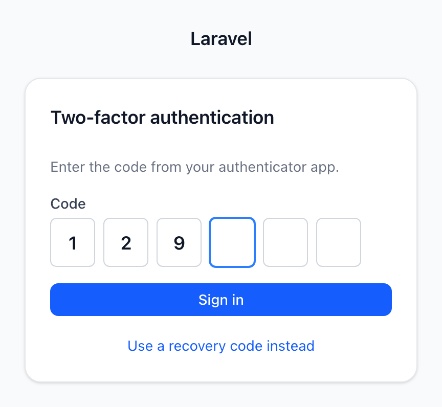
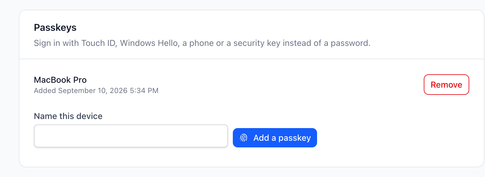

Modules
Týmy a dvoufázové ověření
Dvoufázové ověření a role po týmech zapnuté v aplikaci, která už tenhle panel má — co vlastní Fortify, co permission vrstva a těch pár řádků, které jsou vaše.


Karta na profilu s klíčem zaregistrovaným skutečnou ceremonií WebAuthn. Přidání otevře vlastní dialog platformy, odebrání jde přes vlastní akci balíčku.
Na této stránce
Dvě funkce, o které se každá administrace dřív nebo později poprosí — a ani jedna z nich se tady neimplementuje.
Dvoufázové ověření vlastní Laravel Fortify. Tajemství, TOTP okno, záložní kódy, výzva při přihlašování a rate limiting kolem ní jsou bezpečnostní plocha s udržovaným vlastníkem. Týmy vlastní permission vrstva — role omezené na tým, sloupec navíc v pivot tabulkách a klíč cache, který ho musí obsahovat.
Permission vrstvou je tady vždycky nyoncode/laravel-permission-extended. Není
to alternativa ke spatie/laravel-permission — vyžaduje ho a rozšiřuje o
wildcard matching, super-admin gate, Blade direktivy a události o změně
oprávnění — a přesně to obrazovky rolí v tomhle frameworku předpokládají. Model
na holém Spatie se záměrně nedetekuje, protože správcovské UI nad polovinou
autorizačního modelu je horší než žádné.
Co obojí záměrně vynechává, je obrazovka. Tenhle modul dodává obrazovku a volá jejich akce, takže panel funkci dostane, aniž by vedle té první stála druhá implementace.
composer require laravel/fortify # dvoufázové ověřenícomposer require nyoncode/laravel-permission-extended # role a týmyJak to funguje
Detekce, ne konfigurace. Obě funkce jsou ve výchozím stavu auto a obě
auto hledají tu věc samotnou:
| Funkce | Co auto kontroluje |
Kde |
|---|---|---|
| Dvoufázové ověření | existuje Fortify třída EnableTwoFactorAuthentication a Features::enabled(Features::twoFactorAuthentication()) |
Support\TwoFactor |
| Týmy | nyoncode/laravel-permission-extended je nainstalovaný, config('permission.teams') je true, třída registraru existuje a teams.model se rozřeší |
Support\Teams |
V obou případech dvě podmínky, ne jedna — a obě stály za kontrolu. Fortify bývá
závislostí několika věcí, které aplikace může mít nainstalované z jiných důvodů,
a jeho dvoufázová funkce je řádek v fortify.features, který se dá prostě
vynechat: nainstalované-ale-vypnuté musí číst jako vypnuté, jinak se karta objeví
a její tlačítka spadnou. Týmy se řídí permission.teams, ne vlastním přepínačem,
protože právě tohle nastavení dělá funkci skutečnou: přidává sloupec týmu do
pivot tabulek a do klíče permission cache. Panel, který by s ním nesouhlasil, by
ukazoval přepínač nad autorizací, která omezená není.
Id týmu se pořád nastavuje na Spatie PermissionRegistrar, a není to spor:
rozšiřující balíček přidává chování na model uživatele a registrar dědí beze
změny, takže zůstává tím jediným objektem, který ví, čím je čtení oprávnění
omezené.
Dvoufázové ověření má tři stavy, ne dva. Fortify zapíše tajemství ve chvíli, kdy se vygeneruje QR kód — takže člověk, který panel otevřel a zavřel záložku, ho má a nechrání ho nic:
| Stav | Znamená | Karta ukáže |
|---|---|---|
| vypnuto | žádné tajemství | jedno tlačítko: zapnout |
| nedokončeno | tajemství, nepotvrzené | QR kód, klíč k opsání, šest políček na kód — a cestu ven |
| zapnuto | two_factor_confirmed_at je vyplněné |
záložní kódy a cestu pryč |
Panel, který by tohle modeloval jako boolean, by nechal každé přerušené nastavení
uvízlé v prostředním stavu, zatímco odznak tvrdí, že jsou v bezpečí. Odznak tam
čte „Nedokončeno“ a Vypnout se nabízí i z něj, nejen ze stavu zapnuto —
polorozdělané nastavení musí jít opustit oběma směry, jinak je to past.
Tým omezuje všechno, takže se nastavuje dřív, než ho něco přečte. Se zapnutým
permission.teams je každé čtení role a oprávnění omezené tím id týmu, které
registrar naposledy dostal — takže request, který mu ho nikdy neřekne, vidí
předchozí, což ve workeru nebo v dlouho běžícím procesu znamená cizí. Modul
přidá SetCurrentTeam do middleware skupiny web, a do skupiny, ne za alias,
který si routa vyžádá: stránka, která by alias zapomněla, by autorizovala proti
špatnému týmu a vypadala by naprosto správně.
Přepnutí přesměruje. Tým omezuje každé čtení oprávnění, takže stránka
poskládaná před přepnutím — menu, akce, řádky, které pustila policy — byla
postavená pro tým, ze kterého jste právě odešli. Jediná poctivá odpověď je nový
request a TeamSwitcher ho vyvolá.
Členství se kontroluje při přepnutí, ne jen v seznamu. Přepínač vypíše týmy,
do kterých patříte, a Teams::switchTo() členství ověří znovu, než cokoli uloží.
<select> je markup a markup je to, co doletělo do prohlížeče.
Aktuální tým spadne zpátky, místo aby selhal. Session jeden jmenuje; když jmenuje tým, ve kterém už nejste — nebo zatím nejmenuje nic — použije se první, do kterého patříte. Oba případy jsou běžné a ani jeden by neměl člověka poslat na stránku omezenou na nic.
Jak zapnout dvoufázové ověření
Nainstalujte Fortify, spusťte jeho migraci a zapněte funkci. Nic dalšího se v tomhle panelu nemění:
// config/fortify.phpuse Laravel\Fortify\Features; 'features' => [ Features::twoFactorAuthentication([ 'confirm' => true, 'confirmPassword' => true, ]), ],// app/Models/User.phpuse Illuminate\Foundation\Auth\User as Authenticatable;use Laravel\Fortify\TwoFactorAuthenticatable; class User extends Authenticatable{ use TwoFactorAuthenticatable; }Karta se na stránce profilu objeví ve chvíli, kdy platí obojí. 'confirm' => false
se taky respektuje — modul si to čte přímo z nastavení dané Fortify funkce, ne
z kopie toho nastavení — a tajemství pak je celé nastavení, takže stav „nedokončeno“
nenastane.
Kód se na obou stranách dveří zadává do stejného pole. Políčka na téhle kartě
jsou OtpInput z wire-forms — stejné, jaké kreslí přihlašovací výzva: samy
posouvají kurzor, rozeberou vložený kód a odešlou jednu hodnotu. Žádný druhý
názor na to, jak vypadá šest číslic.
Výzva patří té druhé polovině. Tenhle modul vlastní správcovskou kartu — QR kód, záložní kódy, přepínač. Obrazovka, která se ptá na kód během přihlašování, patří modulu přihlášení, vedle přihlašovacího formuláře, a mechanismus pod obojím je tentýž Fortify. To rozdělení je záměr, ne náhoda: tenhle modul si Fortify detekuje a funguje i bez něj, kdežto balíček, jehož jediná práce jsou obrazovky Fortify, ho vyžaduje. Viz modul přihlášení.
Odpovědět za sebe
// config/wire-module-users.php'two_factor' => false, // kartu neukazovat, ať je nainstalované cokoli 'profile' => [ 'two_factor' => false, // držet ji mimo profil a namountovat jinde ],Po tom druhém sáhněte, když kartu chcete na vlastní stránce zabezpečení —
@livewire(\NyonCode\WireModuleUsers\Livewire\TwoFactorAuthentication::class)
nebere argumenty, protože účet, na kterém pracuje, je vždycky ten přihlášený.
Jak zapnout týmy
Týmy potřebují od vaší aplikace tři věci: nastavení, model týmu a relaci na uživateli, která se k němu dostane. Tenhle modul nedodává ani jednu, protože aplikace, která týmy má, má všechny tři.
// config/permission.php — vlastní config spatie/laravel-permission, publikovaný// přes závislost rozšiřujícího balíčku'teams' => true, 'team_foreign_key' => 'team_id',// config/wire-module-users.php'teams' => [ 'enabled' => 'auto', // řídí se permission.teams 'model' => 'App\Models\Team', 'relation' => 'teams', 'label_attribute' => 'name', 'session_key' => 'wire.team',],// app/Models/User.phpuse Illuminate\Database\Eloquent\Relations\BelongsToMany;use Illuminate\Foundation\Auth\User as Authenticatable;use NyonCode\PermissionExtended\Traits\HasRoles; // tenhle, nikdy Spatie class User extends Authenticatable{ use HasRoles; /** Relace, kterou jmenuje `wire-module-users.teams.relation`. */ public function teams(): BelongsToMany { return $this->belongsToMany(Team::class); } }To je celé. V horní liště se objeví přepínač pro každého, kdo patří do víc než
jednoho týmu, middleware omezí každé čtení oprávnění v každém web requestu
a Gate::allows() začne odpovídat po týmech, aniž by se změnilo jediné volací
místo.
Odkud se přepínač bere
Není v layoutu shellu a tenhle modul do toho souboru nikdy nesahá. Registruje
view do registru chrome ve wire-core a shell vykreslí, co je zaregistrované —
tentýž šev, jaký používá media picker na druhém konci dokumentu:
// packages/module-users/src/WireModuleUsersServiceProvider.phpuse NyonCode\WireCore\Foundation\View\PageChrome; protected function bootTeams(): void{ if (! Teams::enabled()) { return; } $this->app->make(Kernel::class)->appendMiddlewareToGroup('web', SetCurrentTeam::class); $this->app->make(PageChrome::class)->add( 'wire-module-users::team-switcher', PageChrome::TOPBAR, ); }PageChrome::TOPBAR je region pro věci, které musí být vidět — přepínač
týmu, výběr tenanta, odznak prostředí. PageChrome::BODY, výchozí, je pro věci,
které musí jen existovat: modal, který otevírá něco jiného, hostitel
potvrzení. Vaše vlastní aplikace se může registrovat do obou, a jakýkoli jiný
balíček taky:
// app/Providers/AppServiceProvider.phppublic function boot(): void{ app(PageChrome::class)->add('partials.environment-badge', PageChrome::TOPBAR); }Passkeys na profilu
Třetí věc, kterou se dá účet zajistit, a nejnovější: passkey je vlastní
přihlašovací údaj platformy — Touch ID, Windows Hello, telefon, bezpečnostní
klíč. Laravel má celé, přesně jako dvoufázové ověření: laravel/passkeys za
Features::passkeys() ve Fortify přináší ceremonii WebAuthn, řádky s údaji i
klienta do prohlížeče. Tenhle modul přidává kartu.
// config/wire-module-users.php'profile' => [ 'passkeys' => true, // karta tam, kde je funkce zapnutá ], 'passkeys' => 'auto', // 'auto' hledá balíčky se zapnutou funkcí Dva řádky na user modelu — a právě ty, jejichž chybění je tiché: všechny routy odpovídají a zaregistrovaný klíč nepatří nikomu, takže se karta na ně dívá a řekne, co chybí:
use Laravel\Passkeys\Contracts\PasskeyUser;use Laravel\Passkeys\PasskeyAuthenticatable; class User extends Authenticatable implements PasskeyUser { use PasskeyAuthenticatable; }Karta vypíše, co účet má, vezme jméno pro nový klíč a otevře dialog platformy, a
odebírá vlastní akcí balíčku — takže se vyvolá PasskeyDeleted pro cokoli, co
naslouchá.
Tlačítko pro přihlášení patří té druhé polovině, vedle přihlašovacího
formuláře, ze stejného důvodu jako dvoufázová výzva. Viz modul
auth — včetně pasti při vývoji: choďte na localhost, nikdy na
127.0.0.1.
Rozšířený příklad
Všechno výše v jedné aplikaci: tabulka uživatelů s fotkou, týmy omezující autorizaci a dvoufázové ověření dostupné každému, kdo o něj stojí.
// app/Models/User.phpnamespace App\Models; use Illuminate\Database\Eloquent\Relations\BelongsToMany;use Illuminate\Foundation\Auth\User as Authenticatable;use Laravel\Fortify\TwoFactorAuthenticatable;use NyonCode\WireCore\Foundation\Contracts\HasAvatar;use NyonCode\PermissionExtended\Traits\HasRoles;use NyonCode\WireModuleUsers\Concerns\InteractsWithAvatar; class User extends Authenticatable implements HasAvatar{ use HasRoles; use InteractsWithAvatar; // fotka, z nakonfigurovaného sloupce use TwoFactorAuthenticatable; // tajemství a záložní kódy, Fortify protected $fillable = ['name', 'email', 'password', 'avatar_path']; protected $hidden = ['password', 'remember_token', 'two_factor_secret', 'two_factor_recovery_codes']; /** Co vypíše přepínač v liště a proti čemu kontroluje Teams::switchTo(). */ public function teams(): BelongsToMany { return $this->belongsToMany(Team::class); } }// config/wire-module-users.phpreturn [ 'model' => App\Models\User::class, 'avatar' => [ 'enabled' => 'auto', // rozhoduje sloupec níž 'column' => 'avatar_path', 'disk' => 'public', ], 'two_factor' => 'auto', // rozhoduje Fortify 'teams' => [ 'enabled' => 'auto', // rozhoduje permission.teams 'model' => App\Models\Team::class, 'relation' => 'teams', ], 'profile' => [ 'password' => true, 'two_factor' => true, 'delete_account' => false, ],];// database/migrations/…_add_profile_columns_to_users_table.phpSchema::table('users', function (Blueprint $table): void { $table->string('avatar_path')->nullable(); });Nic dalšího. Spusťte php artisan about a panel nahlásí, kterou ze čtyř
volitelných půlek tahle instalace opravdu dostala:
Wire Module Users ....................................................... Avatars ......................................................... enabled Roles ........................................................... enabled Teams ........................................................... enabled Two-factor ...................................................... enabled User model ..................................... App\Models\UserCo vlastní který balíček
| Oblast | Vlastník | Podíl tohohle modulu |
|---|---|---|
Hashování hesla, pravidlo current_password |
Laravel | karta, která se ptá, a udržení session přihlášené po změně |
| Dvoufázová tajemství, TOTP, záložní kódy, výzva při přihlášení | Fortify | třístavová karta, která volá Fortify akce |
| Role, oprávnění, omezení na tým, permission cache | nyoncode/laravel-permission-extended, nad spatie/laravel-permission, který vyžaduje | obrazovky rolí a to, ve kterém týmu je tenhle request |
| Přihlášení, registrace, reset hesla, ověření e-mailu | Fortify nebo Breeze | nic — viz admin shell |
| Týmy samotné: tabulka, model, členství | vaše aplikace | přepínač nad tím, co už máte |
Změna dvoufázového ověření nebo passkeys si znovu vyžádá heslo
Fortify dává password.confirm na každou route, která vypíná dvoufázové
ověření, čte záložní kód nebo odebírá passkey — a má to ve výchozím stavu
zapnuté. Tyto karty ovšem volají Fortify akce přes Livewire, čímž se k nim
dostanou mimo ten middleware — takže je ta pojistka zopakovaná přímo na
kartě, místo aby se ztratila. Kdo drží vypůjčenou session, nevypne druhý faktor,
nepřečte TOTP secret ani nesmaže passkey, aniž by znal heslo, které to všechno
chrání.
Čte se stejné okno, jaké zapisuje Laravelí vlastní RequirePassword —
auth.password_confirmed_at proti auth.password_timeout — takže potvrzení
hesla kdekoli v aplikaci vyhoví všem těmto místům a timeout se nastavuje na
jediném místě:
// config/auth.php'password_timeout' => 10800, // v sekundách; Laravel má ve výchozím stavu tři hodiny Mimo toto okno tlačítka přesměrují na obrazovku pro potvrzení hesla a karta řekne proč, místo aby tiše zobrazila prázdný panel.
Související
- Modul uživatelů — stránka profilu, na které tyhle karty žijí
- Admin shell — auth rám a kam patří přihlašovací obrazovka
- Moduly — co je modul a jak ho balíček dodá